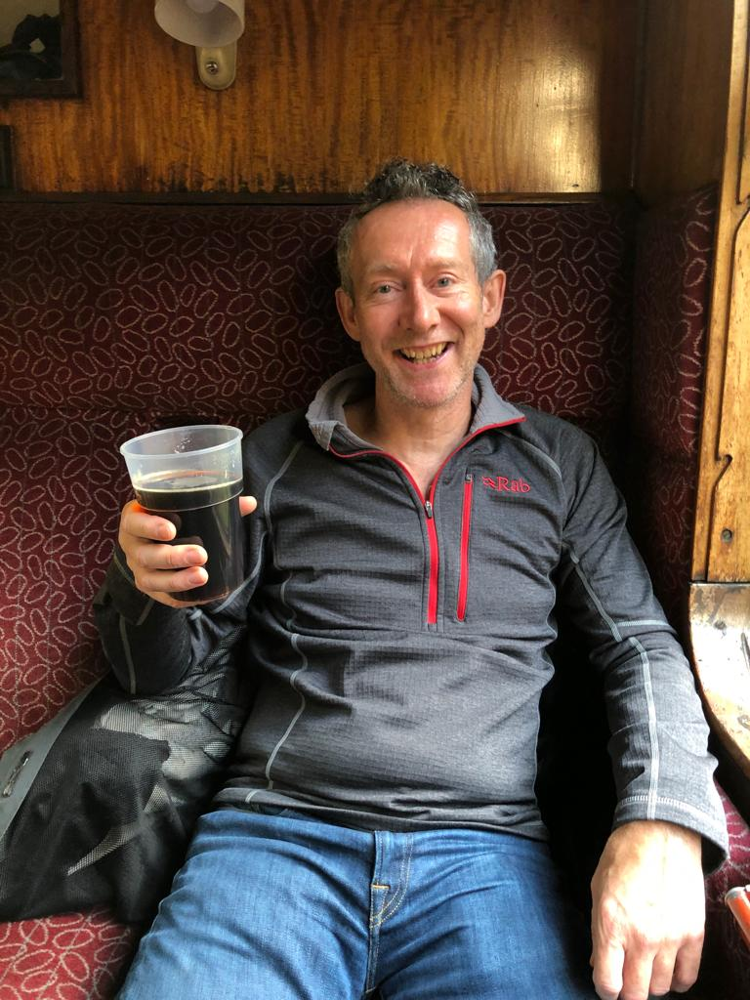
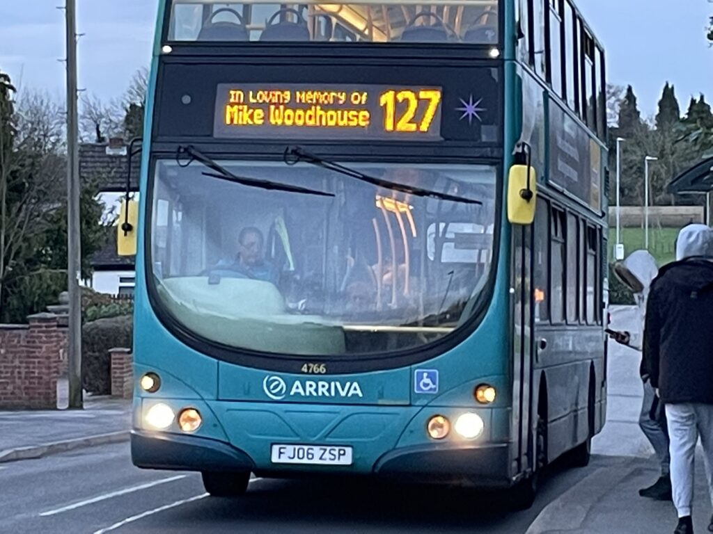
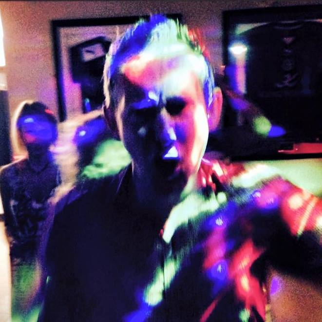
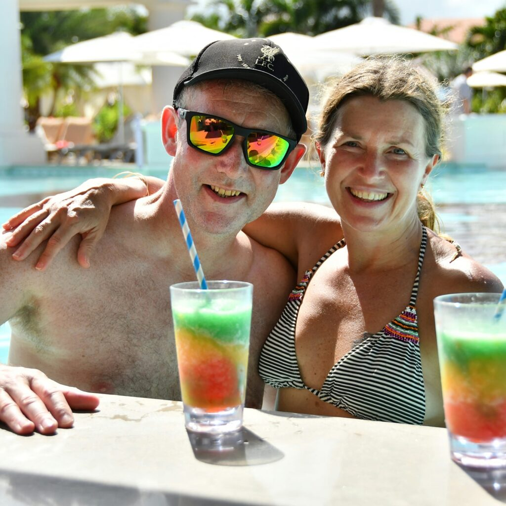
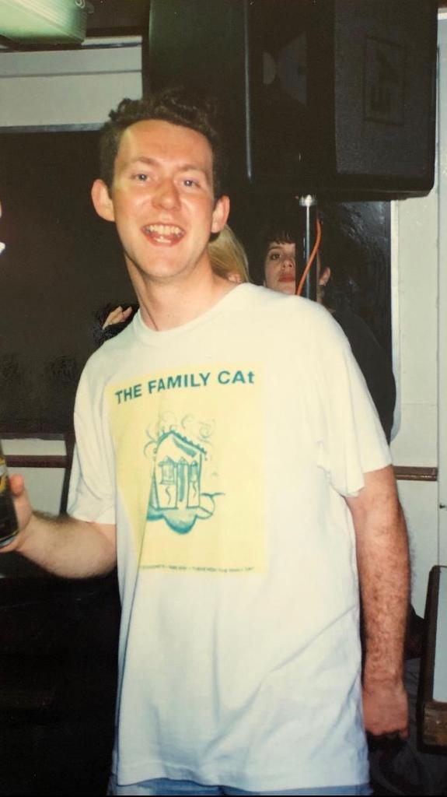

About Mike
During Mike Woodhouse’s short life he attended 640 gigs. He meticulously recorded all of them in a spreadsheet.
This website is an online version of the spreadsheet, created by one of his many friends georgethe23rd.
The website is called “Remember What It Is That You Love”, which is a song by one of Mike’s favourite bands, The Family Cat (he saw them 33 times). It was played at his funeral.
Some brief statistics:
- Mike’s first gig was AC/DC at Manchester Apollo, 3 October 1982
- His 100th was That Petrol Emotion at Brixton The Fridge, 17 October 1990
- His 500th was Vaselines at Nottingham Rescue Rooms, 20 September 2010
- His final gig was seeing House of Love and October Drift at the Rockaway Beach Festival, Bognor Regis Butlins, 9 January 2022




